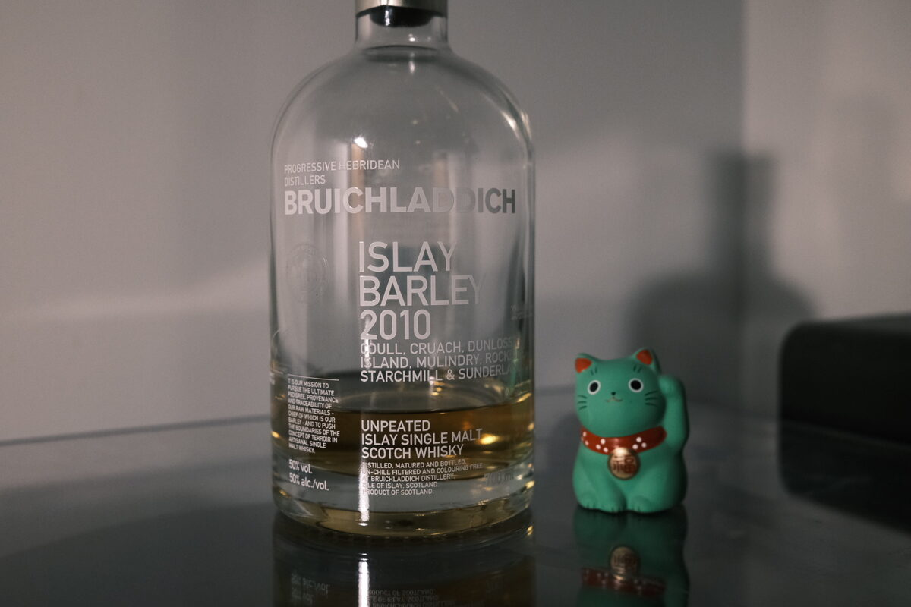

Bruichladdich "Islay Barley" 2010 50% (exbourbon and wine casks)
One of Bruichladdich’s uber-provenance/terroir bottlings. Distilled from Optic and Oxbridge barley grown on the following farms: Coull, Cruach, Dunlossit, Island, Mulindry, Rockside, Starchmill, and Sunderland.
Colour Gold.
Nose Sweet honey. Floral. Lactic, yoghurty funk. Very Bruichladdich. There’s a freshness to it, leafy, stemmy. Fresh white wine acidity, cream. Muesli with dried paw paw and the odd raisin. Jam and scones. Buttery and rich. With a bit of water, definitely creamier and more herbal notes – coriander, black pepper – shine through. It’s very clean, refreshing. A little bit of minerality.
Palate Creamy and thick but light in character. It’s very bright – lemon acidity – perhaps a tad too bright. Driven by sweet honey and floral notes, then into a lightly spiced malt. It’s nutty – think particularly fatty ones like cashews and macadamia nuts. Those nuts caramelised with honey. With water, the texture becomes silkier, and we get waves of crystal clear malt. It’s a little floral, herbaceous.
Finish Spicy, cinnamon, cayenne, and a bit of peppermint. Menthol. Malty and a little oak to it. Dark chocolate infused with chilli. A hint of swiss cheese and fresh ricotta. Quite long, warming, and interestingly, spicy.
Comments Solid stuff. Very clean malt, quite angular. Perhaps that acidic note went too far, but I very much appreciate the laddie funk and the spicy, floral notes. 85/100.

Posted by Dominic on 11 May 2021